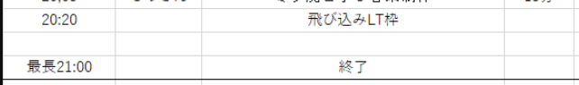
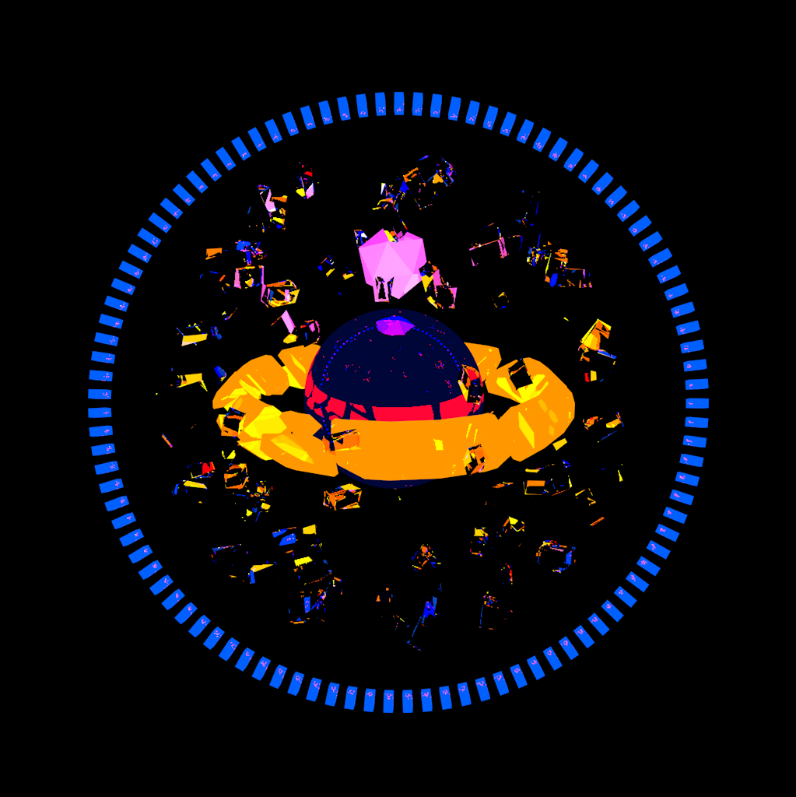

<!DOCTYPE html>
<html lang="en">
  <head>
    <meta charset="utf-8" />
    <meta name="viewport" content="width=device-width, initial-scale=1.0, maximum-scale=1.0, user-scalable=no" />

    <title>LTをやれ！というLT</title>
    <link rel="shortcut icon" href="./../favicon.ico" />
    <link rel="stylesheet" href="./../dist/reset.css" />
    <link rel="stylesheet" href="./../dist/reveal.css" />
    <link rel="stylesheet" href="./../_assets/theme/solarslide.css" id="theme" />
    <link rel="stylesheet" href="./../css/highlight/base16/zenburn.css" />


  </head>
  <body>
    <div class="reveal">
      <div class="slides"><section  data-markdown><script type="text/template">

# LTをやれ！というLT
Suzuke

</script></section><section ><section data-markdown><script type="text/template">

## 今日の目的

みんな軽率にLTをやるようになってほしい

</script></section><section data-markdown><script type="text/template">

なんなら飛び込み枠に来てくれ



</script></section></section><section  data-markdown><script type="text/template">

## 自己紹介




Suzuke

鈴木

20生 Ⅲ類物理工学プログラム

VLL: セトリ・演出班長　(21年度 映像制作/LT/...)

</script></section><section ><section data-markdown><script type="text/template">

## LTとは？の補足

Lightning Talk　→　ズバッとやるお話

軽い気持ちで話して、軽い気持ちで聞く

</script></section><section data-markdown><script type="text/template">

~~客観的に興味深い発表をする~~

自分にとって面白いと思うことを話す

</script></section><section data-markdown><script type="text/template">

### 例

~~VLLのアクティブな人数を保つために交流の場としてLTを推進したい~~<br>
~~LTをもっと多くの人にやってもらうためにそういったことを解説する~~

LT楽しいぃぃ！！！！<br>
みんなもやってくれたらもっと楽しいんだろうなあぁぁぁぁ！！！！！

</script></section></section><section ><section data-markdown><script type="text/template">

## 結論

みんなLTで軽率にお話しようね

</script></section><section data-markdown><script type="text/template">

やってね

</script></section><section data-markdown><script type="text/template">

やれ

</script></section><section data-markdown><script type="text/template">


</script></section></section></div>
    </div>

    <script src="./../dist/reveal.js"></script>

    <script src="./../plugin/markdown/markdown.js"></script>
    <script src="./../plugin/highlight/highlight.js"></script>
    <script src="./../plugin/zoom/zoom.js"></script>
    <script src="./../plugin/notes/notes.js"></script>
    <script src="./../plugin/math/math.js"></script>
    <script>
      function extend() {
        var target = {};
        for (var i = 0; i < arguments.length; i++) {
          var source = arguments[i];
          for (var key in source) {
            if (source.hasOwnProperty(key)) {
              target[key] = source[key];
            }
          }
        }
        return target;
      }

      // default options to init reveal.js
      var defaultOptions = {
        controls: true,
        progress: true,
        history: true,
        center: true,
        transition: 'default', // none/fade/slide/convex/concave/zoom
        plugins: [
          RevealMarkdown,
          RevealHighlight,
          RevealZoom,
          RevealNotes,
          RevealMath
        ]
      };

      // options from URL query string
      var queryOptions = Reveal().getQueryHash() || {};

      var options = extend(defaultOptions, {"controls":true,"progress":true,"controlsTutorial":true,"slideNumber":true,"keyboard":true,"overview":true,"help":true,"pause":true,"mouseWheel":false,"pdfSeparateFragments":false,"helpButtonDisplay":"first","menu":{"side":"left","hideMissingTitles":true,"custom":[{"title":"About","icon":"<i class=\"fa fa-info\">","content":"<p><a href='https://suzukeh.github.io/myreveal/'>slides list</a></p><p><a href='https://github.com/Suzukeh/myreveal'>repository</a></p>"}]}}, queryOptions);
    </script>

    <script src="./../_assets/plugin/chalkboard/plugin.js"></script>
    <script src="./../_assets/plugin/toolbar/toolbar.js"></script>
    <script src="./../_assets/plugin/customcontrols/plugin.js"></script>
    <script src="./../_assets/plugin/helpbutton/helpbutton.js"></script>
    <script src="./../_assets/plugin/menu/menu.js"></script>
    <script src="./../_assets/plugin.js"></script>

    <script>
      Reveal.initialize(options);
    </script>
  </body>
</html>
